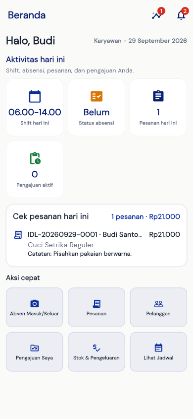
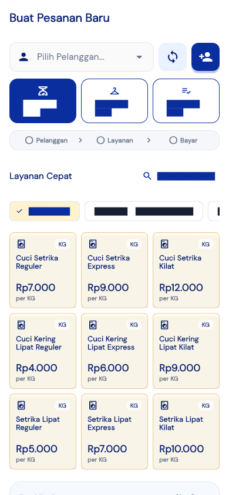
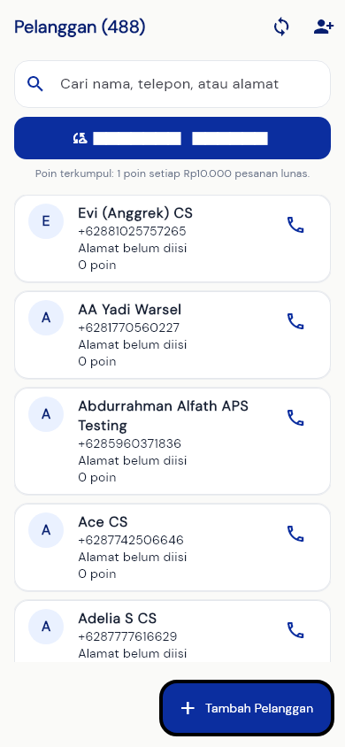
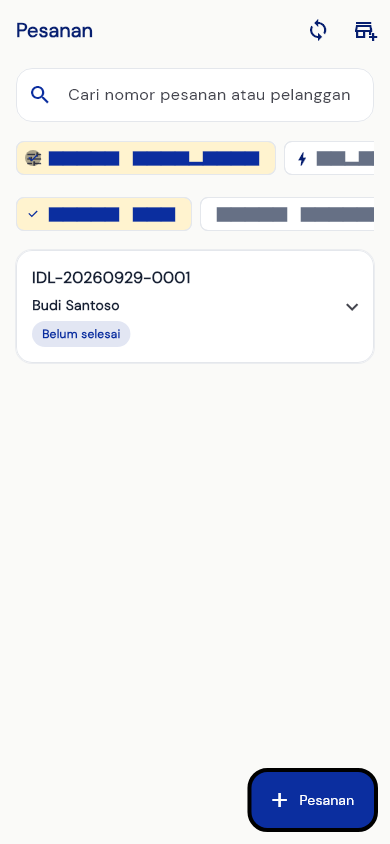
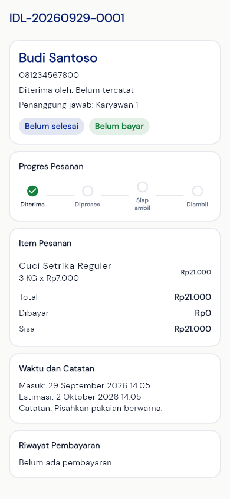
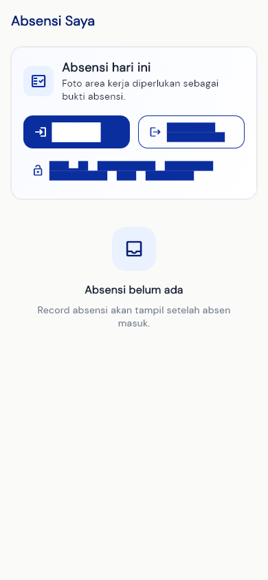
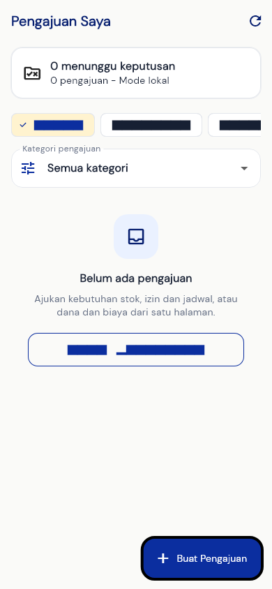
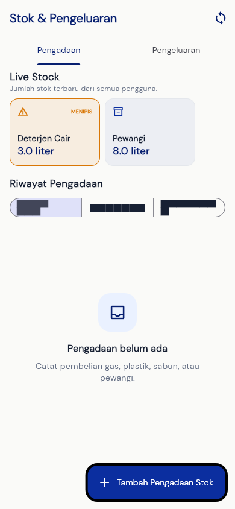
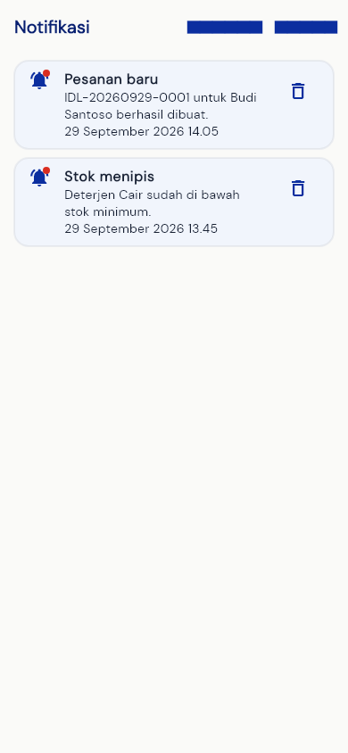
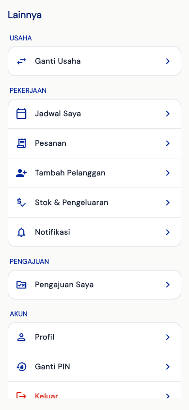

Alur kerja paling sering
- Pilih atau tambah pelanggan
- Buat pesanan dan pilih layanan
- Pilih status pembayaran
- Simpan lalu cetak satu per satu
- Ubah status sampai diambil

1 · Mulai dari sini
Beranda Karyawan
Beranda menampilkan shift, status absensi, pesanan hari ini, dan pengajuan aktif.
Aksi cepat
- Absen Masuk/Keluar untuk mencatat kehadiran.
- Pesanan untuk melihat pekerjaan yang sedang berjalan.
- Pelanggan untuk mencari atau menambah pelanggan.
- Pengajuan Saya untuk menghubungi Owner secara tercatat.
Biasakan memeriksa kartu “Cek pesanan hari ini” setelah login.

2 · Transaksi baru
Buat Pesanan
- Pilih pelanggan. Tambahkan pelanggan baru bila belum terdaftar.
- Pilih Kiloan, Satuan, atau Gabung.
- Tekan layanan yang dibutuhkan. Untuk satuan, pilih barang dan ukuran yang benar.
- Periksa keranjang, jumlah/kg, catatan, dan total.
- Pilih Belum, DP 50%, atau Lunas. Gunakan menu nominal manual untuk jumlah lain atau transfer/QR.
- Tekan Simpan & Cetak Nota.
Total dibulatkan ke atas per Rp1.000. Selalu bacakan total dan sisa bayar kepada pelanggan.

3 · Data pelanggan
Pelanggan
- Cari berdasarkan nama, telepon, atau alamat.
- Tekan ikon telepon untuk menghubungi pelanggan.
- Gunakan Tambah Pelanggan bila pelanggan belum ada.
- Pastikan nomor WhatsApp benar agar pesan “siap diambil” dapat dikirim.
Hindari membuat pelanggan ganda. Cari nomor telepon lebih dulu.

4 · Pantau pekerjaan
Daftar Pesanan
- Gunakan kolom pencarian untuk nomor nota atau nama pelanggan.
- Filter Belum selesai untuk cucian yang masih dikerjakan.
- Filter Selesai untuk pesanan siap ambil atau sudah diambil.
- Tekan kartu pesanan untuk membuka detail.
- Tombol bawah digunakan untuk membuat pesanan baru.

5 · Status, pembayaran, cetak
Detail Pesanan
Periksa pelanggan, petugas, item, total, pembayaran, waktu, dan catatan sebelum melakukan aksi.
Urutan status
Diterima → Diproses → Siap ambil → Diambil.
- Catat pembayaran tambahan sampai status Lunas.
- Tekan WhatsApp Siap Ambil ketika cucian benar-benar siap.
- Pilih preview cetak sesuai kebutuhan.
Cetak satu per satu: Nota Pelanggan, sobek; Label Cucian, sobek; Bukti Pengambilan dicetak saat pesanan lunas dan diambil.

6 · Kehadiran
Absensi
- Periksa jadwal hari ini.
- Tekan Absen Masuk saat mulai bekerja.
- Izinkan kamera dan ambil foto sesuai ketentuan toko.
- Tekan Absen Keluar setelah pekerjaan selesai.
Status berhasil akan muncul pada halaman ini dan dapat dilihat Owner.

7 · Hubungi Owner
Pengajuan Saya
- Pilih kategori: stok, lembur, tukar shift, izin, atau kebutuhan lain yang tersedia.
- Isi kolom yang diminta dan catatan seperlunya.
- Tekan tombol kirim ke Owner.
- Pantau status: Menunggu, Disetujui, atau Ditolak.
Status “Selesai” berarti keputusan sudah diproses, bukan sekadar dibaca.

8 · Catatan operasional
Stok & Pengeluaran
- Pilih periode Hari Ini, Kemarin, atau Seminggu.
- Buka bagian pengeluaran untuk melihat transaksi.
- Tekan tambah pengeluaran dan isi nominal, kategori, metode, serta keterangan.
- Untuk kebutuhan stok, gunakan pengajuan agar Owner dapat menyetujui dan mencatat pengadaan.

9 · Informasi baru
Notifikasi
- Titik merah menandakan notifikasi belum dibaca.
- Tekan notifikasi untuk membuka halaman terkait.
- Gunakan tombol tandai dibaca setelah informasi ditindaklanjuti.

10 · Menu tambahan
Menu Lainnya
Di sini tersedia pembaruan aplikasi, jadwal, printer, profil/PIN, dan menu tambahan sesuai izin karyawan.
- Pembaruan aplikasi: instal jika Owner meminta update.
- Printer: sambungkan printer Bluetooth sebelum mencetak nota.
- Profil/PIN: jaga PIN dan jangan diberikan kepada orang lain.